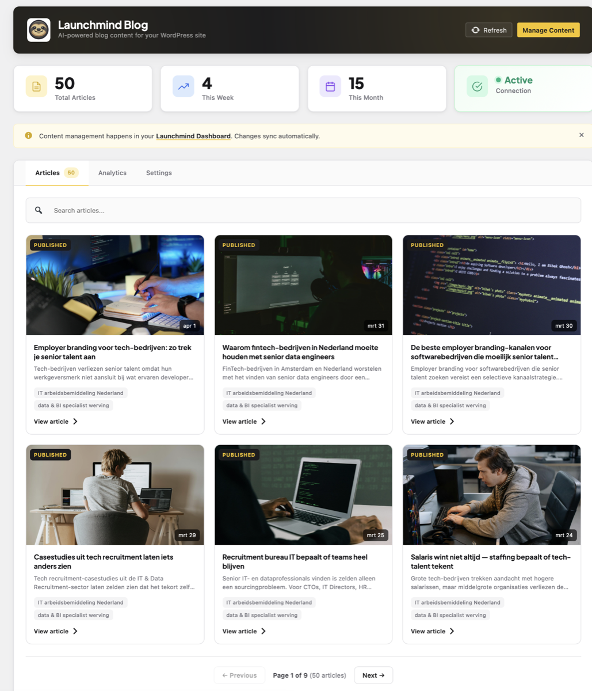
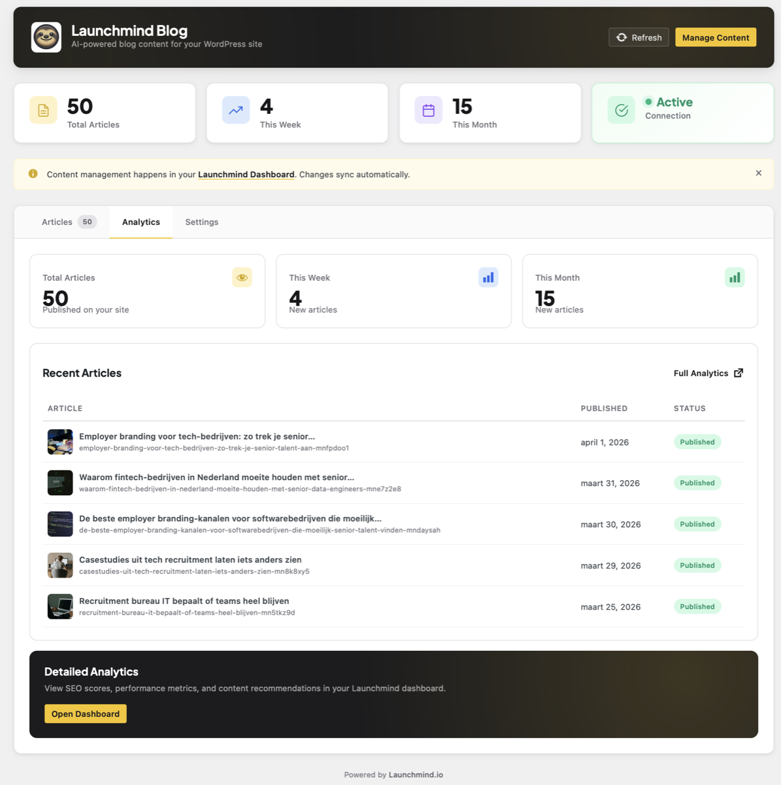
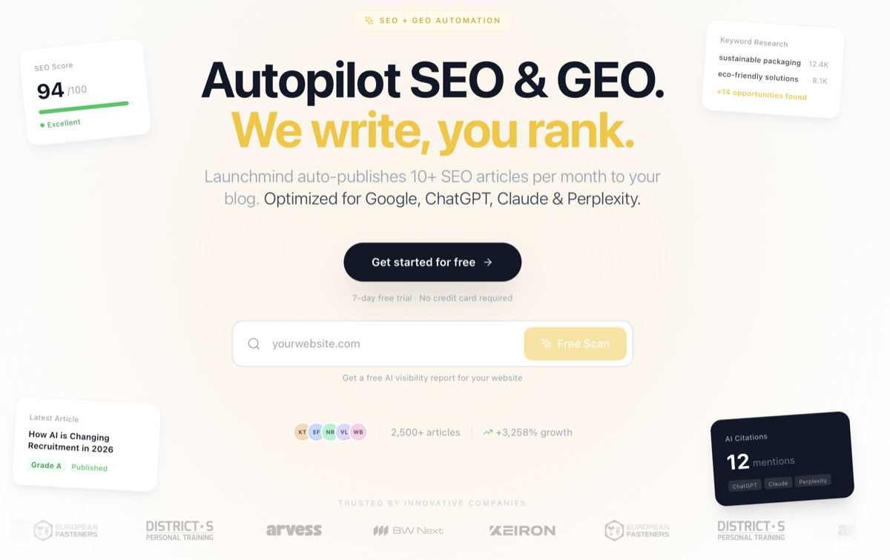

Launchmind generates SEO + GEO optimized articles for your business and pushes them
directly into your selected Odoo Website > Blog after connection confirmation.
Articles are native blog.post records. Sync replaces managed fields;
source withdrawal controls publication. Reconciliation can restore locally deleted,
archived or drafted posts while their source remains eligible.

Select an existing website/blog pair in Settings > Website, enter your API key server-side, and click Connect. Signed installation confirmation must complete before delivery. The destination locks once owned posts exist.
Launchmind delivers through a signed webhook with retained retry state. Odoo scheduled work handles optional discovery, notifications and daily health. Delivery failures never switch back to weaker authentication.
Articles arrive as standard blog.post records. Delivered media can be
stored locally, authors use connector-owned identities, and native tags reuse
exact labels without renaming shared customer tags.
Every article is optimized not just for Google but also for AI search engines like ChatGPT, Perplexity, and Claude. Schema.org markup, meta descriptions, and structured headings come built-in.
The first pilot is Dutch. Additional languages and customer routing need representative native validation before a multilingual rollout is claimed.
Built on top of Odoo's native website_blog module, so canonical URLs,
sitemap.xml, breadcrumbs and Open Graph tags all keep working exactly as Odoo
designed them. Article JSON-LD is added only when no Article/BlogPosting owner
already exists. Customer robots and noindex policy remain authoritative.
Install Launchmind Blog from the Odoo Apps store. It depends only
on the standard website_blog module. Hosting must allow custom Python
addons; standard Odoo Online without custom addons is not supported.
Go to Settings > Website > Launchmind Blog, paste your API key (find it at launchmind.io > Dashboard > Settings > API), and click Connect after selecting the website and blog.
Wait for signed confirmation, inspect diagnostics, and verify an approved staging article. Customer publication, canary and backlog activation need separate approval.
Telemetry is opt-in and needs customer approval. It includes full referrer and clicked-target URLs, origin-observed crawler data and daily health. IndexNow stays disabled until production-domain proof and separate activation approval.


website_blog module installed (Odoo includes it by default)Need help? Reach us at support@launchmind.io · Documentation: launchmind.io/docs/odoo